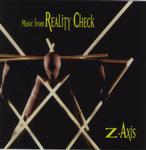

| Artist: | Z-Axis |
| Title: | Music From Reality Check |
| Label: | Gnosis Productions |
| Length(s): | 70 minutes |
| Year(s) of release: | 2000 |
| Month of review: | 10/2000 |
| 1) | Name Your Poison | 4.44 |
| 2) | Slow Glass | 6.23 |
| 3) | Emperor's Cascade | 6.49 |
| Entropy and alchemy | ||
| 4) | Holy Ground | 3.46 |
| 5) | Sky Song | 6.50 |
| 6) | Silhouettes | 5.01 |
| 7) | Ebb And Flow | 4.48 |
| 8) | Suspension | 8.48 |
| 9) | In The Country Of The Blind, | 10.15 |
| The One-eyed Man Is King | ||
| 10) | Homecoming | 6.20 |
| 11) | Slat Dance | 5.26 |